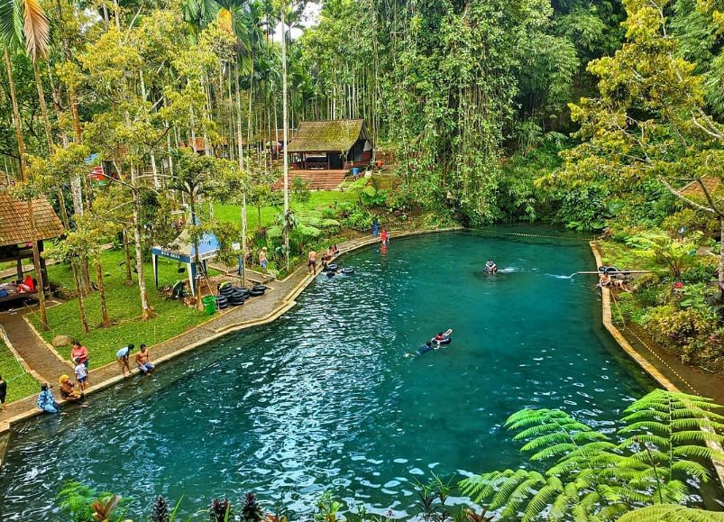
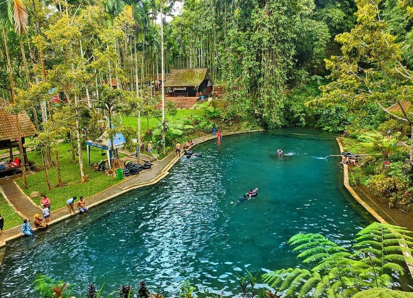

Wisata Banyuwangi
Kawah Ijen
- Setiap hari berangkat & tidak ada minimal peserta
- IDR Rp. 230.000 / Orang (Domastik)
- IDR Rp. 330.000 / Orang / Weekday II IDR RP. 380.000 / weekend (Macanegara)
- Transport PP menuju Kawah Ijen (Banyuwangi Kota)
- Tiket masuk Kawah Ijen
- Air Mineral
- Tour Guide
- Sewa gas masker
- Asuransi yang terlampir di tiket Kawah Ijen
Pulau Merah
- Setiap hari berangkat & tidak ada minimal peserta
- IDR Rp. 200.000 / Orang (Domastik)
- IDR Rp. 300.000 / Orang / Weekday II IDR RP. 350.000 / weekend (Macanegara)
- Transport PP menuju Pulau Merah (Banyuwangi Kota)
- Tiket masuk Pulau Merah
- Air Mineral
- Tour Guide
- Asuransi yang terlampir di tiket Pulau Merah
Teluk Ijo
- Setiap hari berangkat & tidak ada minimal peserta
- IDR Rp. 250.000 / Orang (Domastik)
- IDR Rp. 350.000 / Orang / Weekday II IDR RP. 380.000 / weekend (Macanegara)
- Transport PP menuju Taluk ijo (Banyuwangi Kota)
- Tiket masuk Kawah Ijen
- Air Mineral
- Tour Guide
- 2 pantai merah dan Teluk ijo
- Asuransi yang terlampir di tiket Pulau Merah & Teluk Ijo
DJawatan
- Setiap hari berangkat & tidak ada minimal peserta
- IDR Rp. 100.000 / Orang (Domastik)
- IDR Rp. 150.000 / Orang / Weekday II IDR RP. 200.000 / weekend (Macanegara)
- Transport PP menuju DJawatan (Banyuwangi Kota)
- Tiket masuk DJawatan
- Air Mineral
- Tour Guide
- Sewa Dokar
- Asuransi yang terlampir di tiket DJawatan
Alas Purwo
- Setiap hari berangkat & tidak ada minimal peserta
- IDR Rp. 230.000 / Orang (Domastik)
- IDR Rp. 330.000 / Orang / Weekday II IDR RP. 380.000 / weekend (Macanegara)
- Transport PP menuju Alas Purwo (Banyuwangi Kota)
- Tiket masuk Alas Purwo
- Air Mineral
- Tour Guide
- 2 Pantai
- Asuransi yang terlampir di tiket Alas Purwo
Baluran
- Setiap hari berangkat & tidak ada minimal peserta
- IDR Rp. 250.000 / Orang (Domastik)
- IDR Rp. 330.000 / Orang / Weekday II IDR RP. 380.000 / weekend (Macanegara)
- Transport PP menuju Baluran (Banyuwangi Kota)
- Tiket masuk Baluran
- Air Mineral
- Tour Guide
- + 1 Pantai
- Asuransi yang terlampir di tiket Baluran
Pulau Tabuhan
- Setiap hari berangkat & tidak ada minimal peserta
- IDR Rp. 250.000 / Orang (Domastik)
- IDR Rp. 330.000 / Orang / Weekday II IDR RP. 380.000 / weekend (Macanegara)
- Transport PP menuju Tabuhan (Banyuwangi Kota)
- Tiket masuk Tabuhan
- Air Mineral
- Tour Guide
- Sewa Perahu
- Asuransi yang terlampir di tiket Tabuhan


 
